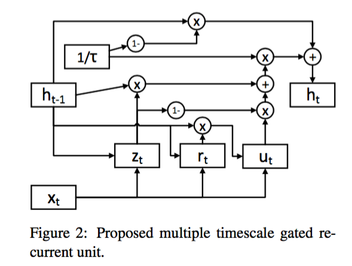
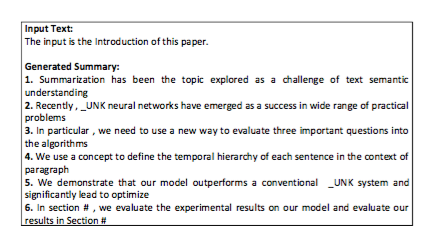
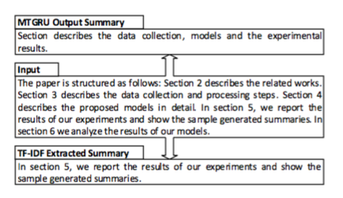

前几天因为去北京参加中文信息学会组织的深度学习“速成班”，一直都没空更新博客。今天分享的paper是昨天刚刚刷出的一篇关于自动文摘的paper，题目是Towards Abstraction from Extraction: Multiple Timescale Gated Recurrent Unit for Summarization。
用seq2seq的思路来解决文本摘要问题仍停留在short text的生成水平上，最多到paragraph level。原因也比较简单，rnn也好，gru、lstm也罢，终究都面临着一个长程依赖的问题，虽然说gru、lstm等技术用gate机制在一定程度上缓解了长程依赖和梯度消失、爆炸的问题，但终究文本过长的话，神经网络的深度就会随之变得非常深，训练起来难度就会随之增加。所以，这也是为什么document level或者说multi document level的abstractive式的摘要生成问题至今都是一个难以解决的问题。确实，short text的理解、表示在一定程度上有了很大的突破，也可以在工程上有不错的应用，比如机器翻译。但text变了之后，一篇很长的文章如何更加准确地理解和表示是一个非常难的问题，attention是一个不错的解决方案，在decoder的部分不需要考虑encoder的全部，只需确定需要注意的几个点就可以了，其实人在看一篇长文的时候也是这样一种机制，从某种角度上来讲，attention在decoder时提供了一种降维的手段，让model更能捕捉到关键的信息。
对于document level的abstractive摘要问题，人是怎么做的呢？比如我写了一篇paper，最后写abstract的部分，基本上是从每个section中提炼出key sentences，组成一段abstract，其实这里有一点extractive的意思，但人和extractive不同的地方在于可以轻松地将each sentence连贯地表达出来，看起来不那么僵硬，更加地顺畅，当然也不会出现指示代词找不到实体的情况。本文的思路正是借鉴了人类在解决这个问题时所采用的一般思路，数据源是arxiv paper中的introduction和abstract部分。

将document分解成多个paragraph，然后从每个paragraph中extract出key sentence作为该paragraph的target summary，每个document可以构造出多个(paragraph,key sentence) pair作为seq2seq的训练数据。生成摘要的过程正好相反，将document分解成paragraph，对每个paragraph用model生成summary，将所有的summary拼接起来形成abstract，然后与paper自身的abstract作对比。
这里从paragraph中提取key sentence用了最简单的TF-IDF来打分排序，当然给n个句子排序有很多的方法，比如textrank。(paragraph,key sentence) pair的训练是通过一个叫Multi Timescale Gated Recurrent Unit(MTGRU)模型来做的，这个模型乍一看好新鲜，其实是N年前一个叫做MTRNN模型将RNN替换为GRU的成果，gru、lstm的变种非常的多，本文的这个模型是其中一个，之所以选择用这个模型来解决问题，是因为多个timescale可以在收敛速度上有更大的优势，并且在自然语言这种层次性的问题上有天然的优势。model的结构如下图

在GRU的基础上增加一个时间项tao，用来控制gru的时间尺度，tao越大，表示model可以越好地捕捉序列数据中的slow features，不知道理解的对比对，这里的slow features是不是可以理解为更大的context window，控制着context的颗粒度。MTGRU可以看作是GRU的一般表示，当tao=1时，自动退化为GRU。
与传统的GRU进行了对比实验，证明了该model在speed和performance上均有更好的表现。下图展示了生成的一些结果：

输入的是本文的introduction部分，输出的是每段生成的summary。

这个是本文算法生成的摘要和纯extractive方法的对比，明显比extractive的方法概括地更加全面。
本文是一篇占坑的文章，内容并不完整，提出了MTGRU model来替换一般的GRU，但并不是full data driven，用了一些extractive的手段来辅助进行训练，在文章的future work这部分作者也提到了下一步要做成一个真正的data driven的model，每个paragraph的target summary也是data driven的，而不是用extractive的提取出来的，我在想，是否可以构造一个hierarchy model，一个维度在训练paragraph到sentence的mapping，一个维度在训练document到abstract的mapping，这个idea可以认真琢磨下，也欢迎大家讨论。